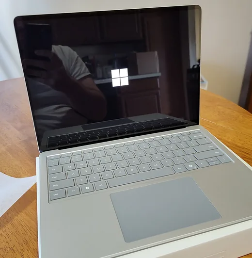
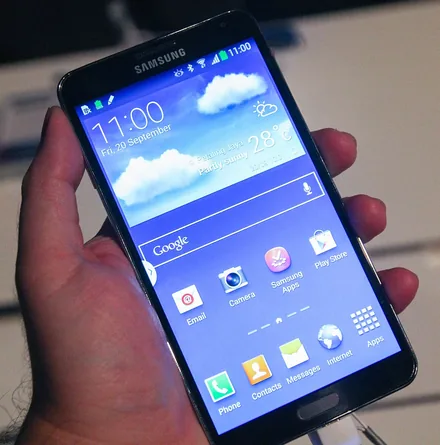
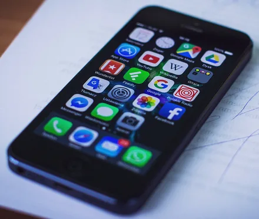

<!doctype html>
<html lang="ro">
<head>
<meta charset="utf-8">
<meta name="viewport" content="width=device-width, initial-scale=1, viewport-fit=cover">
<title>Lecția 8, clasa a V-a: Ce face un sistem de operare. Elemente de interfață</title>
<meta name="description" content="Lecția 8, clasa a V-a: ce face sistemul de operare (Windows, Android, iOS) și cum lucrezi cu interfața Windows: desktopul, pictogramele, meniul Start, bara de activități și ferestrele, pe un ecran Windows simulat în pagină.">
<link rel="preconnect" href="https://fonts.googleapis.com">
<link rel="preconnect" href="https://fonts.gstatic.com" crossorigin>
<link rel="stylesheet" href="https://fonts.googleapis.com/css2?family=Outfit:wght@600;700&family=Albert+Sans:ital,wght@0,400;0,600;0,800;1,400&family=Spline+Sans+Mono:wght@500;600&display=swap&subset=latin-ext">
<link rel="stylesheet" href="../../../jocuri/_motor/motor.css">
<style>
:root{
  --desk:#ECF1F7; --paper:#FFFFFF; --paper2:#F2F6FB; --line:#D0DAE6;
  --ink:#16202E; --ink2:#556476; --accent:#0A5CA8; --accentInk:#FFFFFF; --sel:#D3E6FA;
  --mark:#FFE17A; --markInk:#16202E; --ok:#23784A; --okbg:#E0F2E7; --bad:#B83A30; --badbg:#FBE6E3;
  --fd:"Outfit","Segoe UI",system-ui,sans-serif; --fb:"Albert Sans","Segoe UI",system-ui,sans-serif; --fm:"Spline Sans Mono",Consolas,monospace;
  --bar:#E9EEF5; --barInk:#16202E;
}
@media (prefers-color-scheme:dark){:root:not([data-theme="light"]){
  --desk:#0E131B; --paper:#161D28; --paper2:#1E2734; --line:#2E3A4B;
  --ink:#E4EBF4; --ink2:#A3B1C3; --accent:#7AB8F2; --accentInk:#0E131B; --sel:#1C3957;
  --mark:#EDCB63; --markInk:#16202E; --ok:#6CCB8F; --okbg:#18301F; --bad:#FF877B; --badbg:#3A1E1B;
  --bar:#1B2330; --barInk:#E4EBF4;
}}
:root[data-theme="dark"]{
  --desk:#0E131B; --paper:#161D28; --paper2:#1E2734; --line:#2E3A4B;
  --ink:#E4EBF4; --ink2:#A3B1C3; --accent:#7AB8F2; --accentInk:#0E131B; --sel:#1C3957;
  --mark:#EDCB63; --markInk:#16202E; --ok:#6CCB8F; --okbg:#18301F; --bad:#FF877B; --badbg:#3A1E1B;
  --bar:#1B2330; --barInk:#E4EBF4;
}
/* tema: bara de activități a unui Windows 11, cu sigla Start la mijloc și o fereastră cu cele trei butoane */
.banda{display:flex;align-items:center;justify-content:center;gap:10px;padding:6px 12px;white-space:nowrap;overflow:hidden;background:var(--bar);border-bottom:2px solid var(--accent);color:var(--barInk)}
.banda .st{display:inline-grid;grid-template-columns:8px 8px;gap:2px}
.banda .st i{display:block;width:8px;height:8px;background:linear-gradient(135deg,#4cc2ff,#0067c0)}
.banda .ap{display:inline-block;width:16px;height:16px;border-radius:4px;background:color-mix(in srgb,var(--accent) 35%,transparent);position:relative}
.banda .ap::after{content:"";position:absolute;left:4px;right:4px;bottom:-5px;height:2px;border-radius:2px;background:var(--ink2)}
.banda .fe{font-family:var(--fm);font-size:.72rem;letter-spacing:.35em;border:1px solid var(--line);border-radius:4px;padding:0 4px 0 8px;background:var(--paper)}
h1,h2{font-weight:700;letter-spacing:0}
/* galeria: fotografii mici, fiecare cu numele dedesubt (ca în lecția 5) */
.galerie{display:grid;grid-template-columns:repeat(auto-fill,minmax(140px,1fr));gap:10px;margin:.7em 0 .2em}
.galerie .captura{margin:0}
.galerie .captura img{width:100%;aspect-ratio:1/1;object-fit:contain;background:#fff}
.galerie .captura figcaption{text-align:center;font-weight:800;color:var(--ink);font-size:.93rem;margin-top:.25em}
.galerie-credit{font-size:.78rem;color:var(--ink2);line-height:1.35;margin:.3em 0 .9em}
/* schema „Ce am învățat” (HTML, nu imagine), ca în lecțiile 4-5 */
.schema{display:grid;gap:6px;justify-items:center;margin:12px auto 14px;max-width:520px}
.sc-box{border:2px solid var(--accent);border-radius:10px;background:var(--paper);padding:6px 12px;text-align:center;width:100%;line-height:1.3}
.sc-box b{display:block;font-family:var(--fd);font-size:1.02rem}
.sc-box span{display:block;font-size:.88rem;color:var(--ink2)}
.sc-sag{font-size:1.35rem;line-height:1;color:var(--accent);font-weight:700}
details.verif{margin-top:.4em;font-size:.93rem}
details.verif summary{cursor:pointer;font-weight:800;color:var(--accent);min-height:32px;padding:4px 0}
</style>
</head>
<body>
<script src="../../../jocuri/_motor/motor.js"></script>
<script src="../../_sim/desktop-windows.js"></script>
<script>
/* Lecția 8, clasa a V-a (M2, prima lecție a modulului): „Ce face un sistem de operare. Elemente de interfață”.
   Standardul: LearningHub\_campaign\revizuire_completa_2026_09\05_STANDARD_LECTIE.md. Sursele și probele: surse.md.
   Simulatorul „desktop” (un Windows mic: desktop, pictograme, Start, bara de activități, ferestre) e fișierul comun
   lectii/_sim/desktop-windows.js, scris pentru lecția asta. Granița: fișierele și folderele sunt ale lecției 9,
   operațiile cu ele ale lecției 10 — aici nu apar. */
const LIC={
  cc0:'<a href="https://creativecommons.org/publicdomain/zero/1.0/deed.ro" target="_blank" rel="noopener">CC0</a>',
  bysa2:'<a href="https://creativecommons.org/licenses/by-sa/2.0/deed.ro" target="_blank" rel="noopener">CC BY-SA 2.0</a>'
};
const wc=(file,nume)=>`<a href="https://commons.wikimedia.org/wiki/File:${file}" target="_blank" rel="noopener">${nume}</a>`;
const fig=(f,w,h,alt,cap)=>`<figure class="captura"><a href="img/${f}" target="_blank"></a><figcaption>${cap}</figcaption></figure>`;
const ROSU='Chenarele roșii le-am pus noi.';
const CR={
  laptop:`Foto: StrangeApparition2011, ${wc('Microsoft_Surface_Laptop_7.jpg','Wikimedia Commons')}, ${LIC.cc0}; decupată.`,
  android:`liewcf, ${wc('Samsung_Galaxy_Note_3_home_screen.jpg','Wikimedia Commons')}, ${LIC.bysa2}`,
  iphone:`freestocks.org, ${wc('IPhone_Home_Screen_(23724266304).jpg','Wikimedia Commons')}, ${LIC.cc0}`
};
const IMG={
  laptop:fig('laptop-pornire.webp',520,532,'Un laptop deschis, pe o masă de lemn: pe ecranul negru, în mijloc, sigla Windows, patru pătrate albe',`Un laptop care tocmai pornește: pe ecran apare sigla Windows. ${'<small>'+CR.laptop+'</small>'}`),
  sisteme:`<div class="galerie">
  <figure class="captura"><a href="img/laptop-pornire.webp" target="_blank"></a><figcaption>Windows</figcaption></figure>
  <figure class="captura"><a href="img/telefon-android.webp" target="_blank"></a><figcaption>Android</figcaption></figure>
  <figure class="captura"><a href="img/telefon-iphone.webp" target="_blank"></a><figcaption>iOS (pe iPhone)</figcaption></figure></div>
<p class="galerie-credit">Foto, Wikimedia Commons: ${wc('Microsoft_Surface_Laptop_7.jpg','StrangeApparition2011')} (${LIC.cc0}), ${wc('Samsung_Galaxy_Note_3_home_screen.jpg','liewcf')} (${LIC.bysa2}), ${wc('IPhone_Home_Screen_(23724266304).jpg','freestocks.org')} (${LIC.cc0}); decupate.</p>`,
  peste:fig('aplicatie-peste-desktop.webp',1000,500,'Ecranul Windows cu pictograme în stânga și, deasupra, fereastra aplicației Paint; un chenar roșu scrie sistemul de operare, altul aplicația Paint','Chenarul „sistemul de operare” arată ecranul de lucru pe care îl desenează Windows; Windows e programul din spatele lui. Deasupra, o aplicație pornită de el: Paint. '+ROSU),
  desktop:fig('desktop-pictograme.webp',545,600,'Colțul din stânga sus al desktopului Windows: pictograme cu numele dedesubt; prima este Coș de reciclare','Desktopul, cu <b>pictograme</b>. Prima e <b>Coș de reciclare</b>. '+ROSU),
  bara:fig('bara-activitati.webp',780,98,'Bara de activități din Windows 11: butonul Start cu sigla din patru pătrate, caseta Căutare și pictogramele câtorva aplicații','<b>Bara de activități</b> din Windows 11, fără partea din dreapta. '+ROSU),
  butoane:fig('butoane-fereastra.webp',1000,226,'Colțul din dreapta sus al ferestrei Paint: trei butoane, o liniuță, un pătrat și un X, fiecare încadrat cu roșu și cu numele alături','Cele trei butoane din dreapta barei de titlu: <b>Minimizare</b>, <b>Maximizare</b>, <b>Închidere</b>. '+ROSU),
  butoaneFara:fig('butoane-fereastra-fara-nume.webp',175,53,'Trei butoane dintr-un colț de fereastră: o liniuță, un pătrat și un X, fiecare încadrat cu roșu','Butoanele din colțul ferestrei. Chenarele roșii le-am pus noi.')
};
/* nota de sub ecranul simulat, la pașii 2-3 (înainte de pasul despre fereastră) */
const NOTA_SCURTA='Simulatorul e un Windows mic: pe bara lui de activități stau doar aplicațiile pornite, cu numele scris sub pictogramă (în Windows, numele apare când ții săgeata pe pictogramă).';
/* schema „Ce am învățat” */
const SCHEMA=`<div class="schema" role="img" aria-label="Schema: sistemul de operare pornește primul și le conduce pe celelalte; interfața Windows are desktopul cu pictograme și bara de activități; fiecare aplicație are o fereastră cu trei butoane, pe care o muți și îi schimbi mărimea">
  <div class="sc-box"><b>Sistemul de operare</b><span>programul care pornește primul: Windows, Android, iOS. Pornește aplicațiile, face piesele să lucreze, îți arată ecranul de lucru</span></div>
  <div class="sc-sag" aria-hidden="true">↓</div>
  <div class="sc-box"><b>Interfața Windows</b><span>desktopul cu pictograme · bara de activități: butonul Start, butoanele aplicațiilor, zona de notificare cu ceasul</span></div>
  <div class="sc-sag" aria-hidden="true">↓</div>
  <div class="sc-box"><b>Fereastra unei aplicații</b><span>bara de titlu · Minimizare, Maximizare (Restabilire jos), Închidere · o muți, îi schimbi mărimea, treci la alta</span></div>
</div>`;

/* „Acum la calculatorul din laborator” (modul lecție: după atelier, înainte de verificare; diploma îl repetă).
   FĂRĂ profesor (la ora simultană e la cealaltă clasă) și FĂRĂ nicio schimbare care rămâne pe calculatorul comun. */
const LABORATOR=[
  'Stai pe scaun, la locul tău. Azi <b>nu schimbi nimic</b> din ce folosesc și colegii: nu tragi pictogramele și nici bara de activități, nu apeși butonul din dreapta al mouse-ului, nu ștergi nimic și nu oprești calculatorul. Doar pornești aplicații, le aranjezi ferestrele și le închizi.',
  'Dacă ecranul e negru, mișcă puțin mouse-ul: de obicei se aprinde. Dacă rămâne negru sau îți cere o parolă, nu scrie nicio parolă și nu apăsa nimic. Scrie în caiet, în cuvinte, cum ai face pașii 4, 5 și 6, apoi treci la pasul 7.',
  'Uită-te la ecran și scrie în caiet: ce sistem de operare are calculatorul (butonul Start are sigla Windows?); numele a două pictograme de pe desktop; ora și data din zona de notificare. Dacă Windows-ul e în engleză, Coș de reciclare se cheamă Recycle Bin, iar data poate începe cu luna.',
  'Pornește Calculatorul din meniul Start. Nu-l vezi? Scrie „calc” și dă clic pe Calculator, primul rezultat. Ascunde-l cu Minimizare (liniuța), apoi readu-l cu un clic pe pictograma lui din bara de activități. Fă-l cât tot ecranul cu Maximizare, apoi readu-l cu Restabilire jos (cele două pătrate). Dacă, ținând săgeata pe pătrat, apare un panou cu dreptunghiuri, nu alege nimic din el: apasă chiar pe pătrat.',
  'Pornește și Paint, tot din Start. <b>Nu da clic pe foaia albă din mijlocul lui Paint:</b> Paint e gata de desenat, iar un clic acolo lasă un punct. Mută fereastra Paint: ține apăsat pe bara de titlu și trage. Apoi fă-o mai mică: pune săgeata exact pe colțul din dreapta jos al ferestrei; când devine o săgeată cu două vârfuri, ține apăsat și trage spre mijloc.',
  'Treci la Calculator cu un clic pe pictograma lui din bara de activități. Apoi treci înapoi la Paint: clic pe bara lui de titlu, sus, unde scrie Paint, sau pe pictograma lui din bara de activități. Nu pe foaia albă.',
  'Închide Paint și Calculatorul, fiecare cu Închidere (X). Dacă Paint te întreabă „Salvați lucrul?”, apasă <b>Nu salvați</b> (în engleză, Don&#39;t save). <b>Nu apăsa Enter și nici butonul albastru:</b> ar începe salvarea desenului pe calculatorul comun. <details class="verif"><summary>Verifică-te, la final</summary>Pe ecran nu mai e nicio fereastră pornită de tine. Pictogramele și bara de activități sunt la locul lor, ca la început, iar calculatorul a rămas pornit. În caiet ai scris: Windows, numele a două pictograme, ora și data; sau, dacă ecranul a rămas negru, pașii 4, 5 și 6 în cuvinte.</details>'
];

JocMotor.porneste({
  cheie:'lectie_v_m2_l08',
  mod:'lectie',   // motorul în modul lecție: firimituri spre lectii/v/, „Lecția 8”, pasul din laborator înainte de verificare
  titlu:'Ce face un sistem de operare. Elemente de interfață',
  marca:'Lecția <b>8</b> · clasa a V-a',
  h1:'Ce face un sistem de operare. Elemente de interfață',
  eticheta:'Lecții TIC',
  acasa:{href:'../../../hub/index.html',text:'LearningHub'},
  clasa:'a V-a', unitate:'V-U2', unitateTitlu:'Sistemul de operare. Ordinea în fișierele mele',
  competente:['CS.1.2'], lectii:'8',
  ancoraText:'Din programă (CS.1.2, unitatea V-U2, lecția 8): Rolul unui sistem de operare · Elemente de interfață ale unui sistem de operare',
  intro:`<p>Afli ce face programul care pornește primul pe calculator și pe telefon. Apoi înveți să lucrezi cu ecranul lui: pornești aplicații, le ascunzi, le mărești, le muți și le închizi ferestrele. Înveți pe pași, cu imagini din Windows și cu un ecran Windows simulat, chiar în pagină. Apoi faci la fel la calculatorul din laborator. La sfârșit verifici ce știi, cu 5 întrebări.</p>
<p><b>La final știi:</b> să spui ce face un sistem de operare și să lucrezi singur cu desktopul, meniul Start, bara de activități și ferestrele.</p>
<p><b>Ai nevoie de:</b> lecția 3 — un program e un șir de instrucțiuni; lecția 4 — piesele calculatorului, la un loc, se numesc hardware, iar programele se mai numesc aplicații, de exemplu aplicația Calculator; lecția 5 — cu mouse-ul (sau cu degetul pe touchpad) muți săgeata de pe ecran, iar monitorul e dispozitiv de ieșire; lecția 2 — în laborator nu atingi cablurile și prizele, iar calculatorul îl oprește profesorul.</p>`,
  cum:`<b>Cum lucrezi</b><ol><li>Citești 6 pași scurți. Primul îți arată la ce folosește lecția; după fiecare dintre ceilalți faci un exercițiu mic, fără puncte, de cele mai multe ori pe un ecran Windows simulat.</li><li>La atelier pregătești ecranul simulat pentru o temă, după o listă de teste.</li><li>Acum la calculatorul din laborator: faci aceleași gesturi pe Windows-ul adevărat, fără să schimbi nimic pe el.</li><li>Răspunzi la 5 întrebări de verificare: pentru ele primești stele.</li></ol>`,
  banda:'<span class="st"><i></i><i></i><i></i><i></i></span><span class="ap"></span><span class="ap"></span><span class="ap"></span><span class="fe">—☐✕</span>',
  nivele:[
{t:'Ce face un sistem de operare. Elemente de interfață',final:true,lectii:[8],
 continuturi:['Rolul unui sistem de operare','Elemente de interfață ale unui sistem de operare'],
 obiectiv:'spui ce face sistemul de operare și lucrezi singur cu interfața Windows: pornești aplicații din Start sau de pe desktop, le ascunzi, le mărești, le muți și le închizi ferestrele, treci de la una la alta.',
 pasi:[
  /* ---- pasul 0: la ce folosește (fără acțiuni) ---- */
  {t:'La ce folosește: ce pornește primul',
   text:`<p>Apeși butonul de pornire al unui calculator. Pe ecran apare întâi o siglă, ca în fotografie. Abia apoi vezi ecranul de lucru, de unde poți porni un joc sau aplicația Calculator.</p>
<p>Între apăsarea butonului și ecranul de lucru pornește un program special. Fără el, nicio aplicație nu merge. La fel se întâmplă când pornești un telefon.</p>
<p>Azi afli cum se numește acest program și ce face. Apoi înveți să lucrezi cu ecranul lui: pornești o aplicație, apoi o ascunzi, o aduci înapoi, o faci mai mare, o muți și o închizi.</p>
${IMG.laptop}`},
  /* ---- pasul 1: sistemul de operare ---- */
  {t:'Sistemul de operare',
   text:`<p>Programul care pornește primul se numește <mark>sistem de operare</mark>. Rămâne pornit până oprești aparatul. El:</p>
<ul><li><strong>pornește și oprește aplicațiile</strong>;</li>
<li><strong>face piesele să lucreze pentru ele</strong>: primește ce tastezi și arată rezultatul pe ecran;</li>
<li><strong>îți arată ecranul de lucru</strong>, de unde îi dai comenzi.</li></ul>
<p>Sistemul de operare e tot un program, nu o piesă. Fiecare aparat are unul: calculatoarele din laborator au <strong>Windows</strong>, multe telefoane au <strong>Android</strong>, iar iPhone-ul are <strong>iOS</strong> (se citește „ai-o-es”).</p>
${IMG.sisteme}`,
   exemplu:`<p>Scrii litera <b>A</b> într-o aplicație:</p><ol><li>Apeși tasta A: tastatura trimite apăsarea.</li><li>Sistemul de operare o primește și o dă aplicației în care scrii.</li><li>Aplicația îi cere să arate litera, iar el o arată pe monitor.</li></ol><p>Tu vezi doar litera. Munca din mijloc o face sistemul de operare.</p>${IMG.peste}`,
   altfel:`<p>Gândește-te la școală. Dimineața, administratorul o deschide primul, iar seara o închide ultimul. El dă fiecărei ore o sală, cu bănci și tablă. Orele, adică matematica, desenul, muzica, se țin doar cât școala e deschisă.</p><p>Sistemul de operare e ca administratorul. Aplicațiile sunt ca orele. Sălile și băncile sunt ca piesele calculatorului.</p>`,
   incearca:{t:'choice',q:'Mara pornește tableta ei. Pe ecran apare sigla Android, apoi ecranul de lucru. Abia după aceea, Mara deschide un joc cu puzzle. Ce a pornit primul, înaintea jocului?',
    o:['Android, sistemul de operare al tabletei','Jocul cu puzzle, pentru că îl vede pe ecran','Ecranul tactil al tabletei','Aplicația Calculator'],ok:0,
    ajutor:'Care program pornește primul, când pornești aparatul, și le pornește apoi pe celelalte?',
    why:'Android e sistemul de operare al tabletei: pornește primul și rămâne pornit. Jocul e o aplicație, pornită abia după el. Ecranul tactil e o piesă, nu un program.'},
   inca:[
    {t:'classify',q:'Întâi: e o piesă sau un program? Dacă e program, e sistemul de operare sau o aplicație pornită de el? Sortează.',cats:['Sistem de operare','Aplicație','Piesă (hardware)'],items:[['Windows',0],['Aplicația Calculator',1],['Tastatura',2],['iOS',0],['Jocul de șah de pe telefon',1],['Monitorul',2]],
     ajutor:'Un obiect pe care îl poți ține în mână e piesă. Dintre programe, sistemul de operare pornește primul și le pornește pe celelalte.',
     why:'Tastatura și monitorul sunt piese. Windows și iOS sunt sisteme de operare: pornesc primele. Calculatorul și jocul de șah sunt aplicații, pornite de sistemul de operare.'},
    {t:'tf',q:'Sistemul de operare face parte din hardware.',ok:false,ajutor:'Recitește propoziția „Sistemul de operare e tot un program…”.',why:'Fals. Sistemul de operare e un program: nu-l poți ține în mână. Hardware-ul sunt piesele.'}
   ]},
  /* ---- pasul 2: ecranul Windows (interfața) ---- */
  {t:'Ecranul Windows: desktopul, pictogramele, bara de activități',
   text:`<p>Tot ce vezi pe ecran și folosești ca să-i dai comenzi sistemului de operare se numește <mark>interfață</mark>. În Windows are trei părți mari:</p>
<ul><li><mark>desktopul</mark>: suprafața mare, cu o imagine în spate;</li>
<li><mark>pictogramele</mark>: imagini mici care duc la ceva, de exemplu la o aplicație. Pe desktop au numele dedesubt. De obicei, una este <strong>Coș de reciclare</strong>: despre el afli la lecția 10;</li>
<li><mark>bara de activități</mark>: fâșia de jos. Are <strong>butonul Start</strong> și pictogramele unor aplicații, care sunt tot butoane; sub cele pornite e o linie. În dreapta e <mark>zona de notificare</mark>, cu ceasul, data și câteva pictograme mici, de exemplu cea a sunetului.</li></ul>
${IMG.desktop}${IMG.bara}`,
   exemplu:`<p>Pe ecranul din laborator:</p><ol><li>desktopul, cu pictogramele, de obicei în stânga sus;</li><li>jos, bara de activități: butonul Start (patru pătrate), apoi pictograme de aplicații, de exemplu un dosar galben (lecția 9). Ții săgeata pe una și îi vezi numele;</li><li>în dreapta barei, ceasul: sus ora, <b>10:35</b>, dedesubt data, <b>06.11.2026</b> (ziua, luna, anul).</li></ol><p>Pe Windows în engleză americană, data începe cu luna: 11/6/2026 e 6 noiembrie. După oră scrie AM (înainte de prânz) sau PM (după prânz): 10:35 AM.</p>`,
   incearca:{t:'desktop',q:'Pe ecranul simulat, citește ceasul din zona de notificare. Scrie ora în casetă, de exemplu 10:35 (pe telefon poți scrie și 10 35).',
    cum:'Ceasul e în colțul din dreapta jos al ecranului simulat.',nota:NOTA_SCURTA,
    intrebare:'Ora de pe ceas:',
    teste:[{tip:'ceas',ce:'Ai scris ora pe care o arată ceasul'}],
    rezolvare:[['ceas']],gresit:[['data']],
    solutieText:'ora e rândul de sus al ceasului, din colțul din dreapta jos.',
    ajutor:'Ceasul e în colțul din dreapta jos, pe bara de activități. Sus e ora, dedesubt e data.',
    why:'Ceasul din zona de notificare arată ora sus și data dedesubt. Ora se schimbă singură, ca pe un ceas adevărat.'},
   inca:[
    {t:'classify',q:'Unde găsești fiecare lucru pe ecranul Windows? Sortează.',cats:['Pe desktop','Pe bara de activități'],items:[['Pictograma Coș de reciclare',0],['Butonul Start',1],['Ceasul cu data',1],['Pictogramele cu numele dedesubt',0],['Zona de notificare',1]],
     ajutor:'Bara de activități e fâșia de jos. Desktopul e suprafața mare de deasupra ei.',
     why:'Pictogramele, printre ele și Coș de reciclare, stau pe desktop. Butonul Start și zona de notificare, cu ceasul și data, stau pe bara de activități.'},
    {t:'choice',q:'În zona de notificare scrie sus <b>12:40</b>, iar dedesubt <b>13.11.2026</b>. În ce zi suntem?',o:['13 noiembrie 2026','12 noiembrie 2026','13 ianuarie 2026'],ok:0,
     ajutor:'Dedesubt e data: întâi ziua, apoi luna, apoi anul.',
     why:'Data e rândul de jos: ziua 13, luna 11 (noiembrie), anul 2026. Rândul de sus, 12:40, e ora.'}
   ]},
  /* ---- pasul 3: pornești o aplicație (Start sau dublu-clic) ---- */
  {t:'Pornești o aplicație: din Start sau cu dublu-clic',
   text:`<p><mark>Butonul Start</mark> are sigla Windows. Pe Windows 11 e primul din grupul de butoane din mijlocul barei. Pe Windows 10 e în colțul din stânga jos.</p>
<p>Un clic pe el deschide <mark>meniul Start</mark>, cu aplicații. Dai clic pe una și ea pornește. Nu o vezi? Scrie primele litere din numele ei: Windows o caută, iar tu dai clic pe ea când apare.</p>
<p>A doua cale: <mark>dublu-clic</mark> pe pictograma ei de pe desktop, adică două clicuri repezi, pe același loc, cu butonul din stânga al mouse-ului. Un singur clic doar alege pictograma: se colorează.</p>
`,
   exemplu:`<p><b>Pornești Paint din Start:</b></p><ol><li>Clic pe butonul Start.</li><li>În meniu, clic pe <b>Paint</b>. Nu-l vezi? Scrie „pai” și dă clic pe Paint când apare.</li><li>Paint pornește; pe bara de activități, pictograma lui are o linie dedesubt.</li></ol><p><b>În meniul Start e butonul Alimentare</b>: un cerc cu o linie sus, pe Windows 11 jos în dreapta, pe Windows 10 jos în stânga. Acasă, cu el oprești calculatorul: Start, apoi <b>Alimentare</b> (Power), apoi <b>Închidere</b> (Shut down). În laborator, doar când îți spune profesorul.</p>${IMG.bara}`,
   altfel:`<p>Meniul Start e ca meniul unei cantine: îl deschizi, alegi ce vrei și primești. Pictograma de pe desktop e ca un bilețel lipit pe ușa frigiderului, cu mâncarea ta preferată: ajungi la ea mai repede, fără să mai deschizi meniul.</p>`,
   incearca:{t:'desktop',q:'Pornește aplicația Paint din meniul Start.',
    cum:'Clic pe butonul Start (patru pătrate, jos).',nota:NOTA_SCURTA,
    pictograme:['cos','calc'],
    teste:[{tip:'pornit',app:'paint',prin:'start',ce:'Paint a pornit din meniul Start'}],
    rezolvare:[['start'],['lanseaza','paint','start']],gresit:[['start'],['lanseaza','calc','start']],
    solutieText:'clic pe butonul Start, apoi clic pe Paint.',
    ajutor:'Butonul Start e cel cu cele patru pătrate, jos, la începutul grupului din mijloc. În meniu, caută Paint.',
    why:'Din meniul Start pornești orice aplicație. Paint a pornit, iar pe bara de activități pictograma lui are o linie dedesubt.'},
   inca:[
    {t:'desktop',q:'Pornește Calculatorul cu dublu-clic pe pictograma lui de pe desktop.',
     cum:'Dublu-clic = două clicuri repezi, pe același loc; pe telefon, două atingeri repezi.',nota:NOTA_SCURTA,
     teste:[{tip:'pornit',app:'calc',prin:'desktop',ce:'Calculatorul a pornit cu dublu-clic pe pictograma lui'}],
     rezolvare:[['lanseaza','calc','desktop']],gresit:[],
     solutieText:'două clicuri repezi pe pictograma Calculator, din stânga sus.',
     ajutor:'Un singur clic doar alege pictograma. Dă două clicuri repezi, pe același loc. Pe telefon, două atingeri repezi.',
     why:'Dublu-clic pe pictogramă pornește aplicația. Un singur clic doar o alege.'},
    {t:'order',q:'Acasă vrei să oprești calculatorul corect. Pune pașii în ordine.',items:['Clic pe butonul Start','Clic pe Alimentare','Clic pe Închidere'],
     ajutor:'Recitește „Uite cum”, partea despre butonul Alimentare.',why:'Din Start ajungi la Alimentare, iar acolo alegi Închidere. Așa se oprește corect, nu din ștecăr.'},
    {t:'tf',q:'Un singur clic pe pictograma Calculatorului de pe desktop îl pornește.',ok:false,ajutor:'Ce face un singur clic pe o pictogramă?',why:'Fals. Un singur clic doar alege pictograma. Ca s-o pornești, dai dublu-clic.'}
   ]},
  /* ---- pasul 4: fereastra și cele trei butoane ---- */
  {t:'Fereastra și cele trei butoane',
   text:`<p>Fiecare aplicație pornită se deschide într-o <mark>fereastră</mark>. Sus, fereastra are <mark>bara de titlu</mark>, cu numele aplicației. În dreapta ei sunt trei butoane:</p>
<ul><li><strong>Minimizare</strong> (liniuța): ascunde fereastra. Aplicația merge mai departe, iar butonul ei rămâne pe bara de activități. Un clic pe el o readuce.</li>
<li><strong>Maximizare</strong> (pătratul): fereastra se face cât tot ecranul. Butonul se schimbă în <strong>Restabilire jos</strong> (două pătrate), care o readuce la mărimea de dinainte.</li>
<li><strong>Închidere</strong> (X): închide fereastra și oprește aplicația.</li></ul>
<p>Pe Windows 11, dacă ții săgeata pe pătrat, apare un panou cu dreptunghiuri: nu alege nimic din el, apasă chiar pe pătrat.</p>
${IMG.butoane}`,
   exemplu:`<p><b>Ascunzi Paint și îl readuci:</b></p><ol><li>Clic pe liniuța din dreapta sus a ferestrei: fereastra dispare.</li><li>Pictograma lui Paint e tot pe bara de activități, cu linia dedesubt: Paint merge mai departe.</li><li>Clic pe acest buton: fereastra revine exact cum era.</li></ol><p>Scurtătură: dublu-clic pe bara de titlu face fereastra cât tot ecranul; încă un dublu-clic o readuce. În engleză: Minimize, Maximize, Restore Down, Close.</p>`,
   altfel:`<p>Minimizarea e ca atunci când pui caietul deschis în bancă: nu-l mai vezi, dar e tot la pagina ta. Maximizarea e ca atunci când îl întinzi pe toată masa. Închiderea e ca atunci când îl închizi și îl pui în ghiozdan.</p>`,
   incearca:{t:'desktop',q:'Paint e deschis. Ascunde-i fereastra cu Minimizare, apoi readu-o cu butonul lui Paint din bara de activități.',
    deschise:[{app:'paint',x:.06,y:.05}],
    teste:[{tip:'readus',app:'paint',ce:'Paint a fost ascuns, apoi readus din bara de activități'}],
    rezolvare:[['btn','paint','min'],['bara','paint']],gresit:[['btn','paint','x']],
    solutieText:'clic pe liniuța din dreapta sus a ferestrei Paint, apoi clic pe butonul Paint din bara de activități.',
    ajutor:'Liniuța e primul dintre cele trei butoane din dreapta barei de titlu. Butonul X ar opri aplicația.',
    why:'Minimizarea doar ascunde fereastra. Paint a mers mai departe, iar butonul lui din bara de activități l-a readus.'},
   inca:[
    {t:'desktop',q:'Calculatorul e deschis. Fă-l cât tot ecranul, apoi readu-l la mărimea de dinainte cu butonul Restabilire jos.',
     deschise:[{app:'calc',x:.08,y:.05}],
     teste:[{tip:'restaurat',app:'calc',ce:'Calculatorul a fost cât tot ecranul, apoi a revenit la mărimea de dinainte'}],
     rezolvare:[['btn','calc','max'],['btn','calc','max']],gresit:[['btn','calc','max']],
     solutieText:'clic pe pătrat (Maximizare), apoi clic pe cele două pătrate (Restabilire jos).',
     ajutor:'După Maximizare, butonul din mijloc arată două pătrate: e Restabilire jos.',
     why:'Maximizare face fereastra cât tot ecranul. Același buton, acum Restabilire jos, o readuce la mărimea de dinainte.'},
    {t:'choice',q:`${IMG.butoaneFara}Vrei să oprești aplicația din fereastra asta. Pe care buton apeși?`,o:['Pe X, al treilea: Închidere','Pe liniuță, primul: Minimizare','Pe pătrat, al doilea: Maximizare'],ok:0,
     ajutor:'Care buton închide fereastra și oprește aplicația?',why:'X (Închidere) oprește aplicația. Liniuța doar ascunde fereastra, iar pătratul o face cât tot ecranul.'}
   ]},
  /* ---- pasul 5: aranjezi ferestrele + ce am învățat ---- */
  {t:'Aranjezi ferestrele: le muți, le schimbi mărimea, treci la alta',
   text:`<p>Când ai mai multe ferestre, le aranjezi pe ecran:</p>
<ul><li><strong>muți</strong> o fereastră: ții apăsat butonul din stânga al mouse-ului pe bara ei de titlu și <mark>tragi</mark>, adică miști mouse-ul fără să dai drumul butonului. Dai drumul unde vrei s-o lași;</li>
<li>îi <strong>schimbi mărimea</strong>: pui săgeata exact pe o margine sau pe un colț al ei. Când devine o săgeată cu două vârfuri, tragi;</li>
<li><strong>treci la altă fereastră</strong>: clic pe bara ei de titlu sau pe pictograma ei din bara de activități. Ea vine deasupra: e fereastra în care lucrezi acum.</li></ul>
<p>În simulator tragi și cu degetul. Colțul cu dungi e doar în simulator.</p>`,
   exemplu:`<p><b>Ce am învățat, pe scurt:</b></p>${SCHEMA}<p class="hint"><b>Data viitoare:</b> cum ține sistemul de operare ordinea în ce păstrezi pe disc. Afli în lecția 9.</p>`,
   altfel:`<p>E ca la masa ta, cu mai multe foi pe ea. Foaia de care ai nevoie o tragi mai aproape. Una mare o strângi puțin, ca să încapă și alta lângă ea. Pe cea pe care scrii acum o pui deasupra celorlalte.</p>`,
   incearca:{t:'desktop',q:'Paint acoperă Calculatorul. Adu Calculatorul deasupra și mută-l în jumătatea din dreapta a ecranului.',
    deschise:[{app:'calc',x:.05,y:.05},{app:'paint',x:.08,y:.08}],
    teste:[{tip:'mutat',app:'calc',zona:'dreapta',ce:'Calculatorul stă în jumătatea din dreapta a ecranului'},{tip:'activ',app:'calc',ce:'Calculatorul e fereastra în care lucrezi (deasupra)'}],
    rezolvare:[['activ','calc'],['muta','calc',{x:.56,y:.05}]],gresit:[['muta','paint',{x:.34,y:.05}]],
    solutieText:'clic pe butonul Calculator din bara de activități, apoi tragi Calculatorul de bara lui de titlu spre dreapta.',
    ajutor:'Întâi adu Calculatorul deasupra, cu un clic pe butonul lui din bara de activități. Apoi ține apăsat pe bara lui de titlu și trage spre dreapta.',
    why:'Clicul pe butonul din bara de activități a adus Calculatorul deasupra, iar tragerea de bara de titlu l-a mutat.'},
   inca:[
    {t:'desktop',q:'Fă fereastra Paint mai mică: trage de colțul ei din dreapta jos, spre interior.',
     deschise:[{app:'paint',x:.04,y:.03,w:.84,h:.88}],
     teste:[{tip:'micsorat',app:'paint',ce:'Fereastra Paint e mai mică decât la început'}],
     rezolvare:[['redim','paint',{w:.5,h:.6}]],gresit:[['btn','paint','min']],
     solutieText:'tragi colțul din dreapta jos al ferestrei (în simulator, cel cu dungi) spre stânga și în sus.',
     ajutor:'În simulator, colțul din dreapta jos are dungi. Ține apăsat pe el și trage spre mijlocul ferestrei. Minimizarea nu o micșorează: o ascunde.',
     why:'Trăgând de colț, fereastra își schimbă mărimea și rămâne pe ecran.'},
    {t:'desktop',q:'Treci la Calculator, fără să închizi Paint.',
     deschise:[{app:'calc',x:.3,y:.1},{app:'paint',x:.05,y:.04,w:.8,h:.86}],
     teste:[{tip:'activ',app:'calc',ce:'Calculatorul e fereastra în care lucrezi (deasupra)'},{tip:'ramas',app:'paint',ce:'Paint a rămas pornit'}],
     rezolvare:[['bara','calc']],gresit:[['btn','paint','x']],
     solutieText:'clic pe butonul Calculator din bara de activități.',
     ajutor:'Butonul Calculatorului e pe bara de activități. X ar opri Paint.',
     why:'Clicul pe butonul Calculatorului l-a adus deasupra. Paint a rămas pornit, dedesubt.'}
   ]}
 ],
 atelier:{t:'desktop',titlu:'Atelier: pregătește ecranul pentru o temă',
  intro:`<p><strong>Sarcina:</strong> ai o temă în care desenezi în Paint și socotești în Calculator. Pe ecranul simulat a rămas deschisă fereastra <b>Setări</b>, de la colegul de dinainte. Pregătește ecranul: fă ce cer cele 6 teste de sub ecran, în ordinea care îți convine.</p>
<ol><li>Citește testele de sub ecran.</li><li>Lucrează pe ecranul simulat: testele se bifează pe loc, pe măsură ce le faci.</li><li>Când toate au ✓, apasă <b>Verifică</b>.</li></ol>
<p>Pe telefon: dublu-clic = două atingeri repezi; tragi cu degetul.</p>`,
  q:'Pregătește ecranul pentru temă: fă ce cer cele 6 teste de sub ecran.',
  deschise:[{app:'setari',x:.22,y:.08}],
  teste:[
   {tip:'inchis',app:'setari',ce:'Setări e închisă: nu-ți trebuie'},
   {tip:'pornit',app:'paint',prin:'start',ce:'Paint a pornit din meniul Start'},
   {tip:'pornit',app:'calc',prin:'desktop',ce:'Calculatorul a pornit cu dublu-clic pe pictograma lui de pe desktop'},
   {tip:'mutat',app:'calc',zona:'dreapta',ce:'Calculatorul stă în jumătatea din dreapta a ecranului'},
   {tip:'marit',app:'paint',ce:'Fereastra Paint e mai mare decât când a pornit: ai tras de colț sau de o margine (nu maximizat)'},
   {tip:'readus',app:'calc',ce:'Calculatorul a fost ascuns cu Minimizare, apoi readus din bara de activități'}],
  rezolvare:[['btn','setari','x'],['start'],['lanseaza','paint','start'],['lanseaza','calc','desktop'],['muta','calc',{x:.56,y:.05}],['redim','paint',{w:.82,h:.9}],['btn','calc','min'],['bara','calc']],
  gresit:[['btn','setari','x'],['start'],['lanseaza','paint','start'],['lanseaza','calc','desktop'],['muta','calc',{x:.56,y:.05}],['redim','paint',{w:.82,h:.9}],['btn','calc','x']],
  solutieText:'X pe Setări; Start, Paint; dublu-clic pe pictograma Calculator; tragi Calculatorul spre dreapta; tragi colțul ferestrei Paint (cel cu dungi) în afară; liniuța Calculatorului, apoi butonul lui din bara de activități.',
  ajutor:'Testele cer drumuri anume: Paint din Start, Calculatorul cu dublu-clic pe pictogramă. Mărimea o schimbi trăgând de colțul ferestrei (în simulator, cel cu dungi) sau de o margine. După Minimizare, Calculatorul revine cu butonul lui din bara de activități.',
  why:'Ai folosit toată interfața: meniul Start, o pictogramă, bara de titlu, colțul ferestrei, butoanele ei și bara de activități.',
  inca:[
   {t:'desktop',q:'Alt coleg a lăsat Paint cât tot ecranul. Readu-l la mărimea de dinainte, mută-l în jumătatea din stânga, apoi pornește Calculatorul din meniul Start.',
    deschise:[{app:'paint',x:.3,y:.08,stare:'max'}],
    teste:[
     {tip:'restaurat',app:'paint',ce:'Paint nu mai e cât tot ecranul: l-ai readus la mărimea de dinainte'},
     {tip:'mutat',app:'paint',zona:'stanga',ce:'Paint stă în jumătatea din stânga a ecranului'},
     {tip:'pornit',app:'calc',prin:'start',ce:'Calculatorul a pornit din meniul Start'},
     {tip:'activ',app:'calc',ce:'Calculatorul e fereastra în care lucrezi (deasupra)'}],
    rezolvare:[['btn','paint','max'],['muta','paint',{x:0,y:.03}],['start'],['lanseaza','calc','start']],
    gresit:[['btn','paint','min'],['start'],['lanseaza','calc','start']],
    solutieText:'Restabilire jos (cele două pătrate) pe Paint; tragi Paint de bara de titlu spre stânga; Start, Calculator.',
    ajutor:'Butonul din mijloc al ferestrei Paint arată acum două pătrate: e Restabilire jos. Minimizarea ar ascunde Paint, nu l-ar readuce la mărime.',
    why:'Restabilire jos a readus Paint la mărimea de dinainte, tragerea l-a mutat, iar Calculatorul, pornit ultimul, a venit deasupra.'}
  ]},
 qs:[
  {t:'choice',q:'Bunicul pornește laptopul lui nou. Pe ecran apare sigla Windows, apoi ecranul de lucru. Abia apoi bunicul pornește aplicația Calculator. Ce este Windows pe laptopul bunicului?',
   o:['Sistemul de operare: pornește primul, apoi pornește aplicațiile','O aplicație, la fel ca aplicația Calculator','O piesă a laptopului, adică hardware','Bara de activități a laptopului'],ok:0,
   ajutor:'Ce program pornește primul, când pornești calculatorul?',
   why:'Windows e sistemul de operare: pornește primul și pornește apoi aplicațiile, ca aplicația Calculator. E un program, nu o piesă. Bara de activități e doar o parte a ecranului lui.'},
  {t:'classify',q:'Sortează: sistem de operare, aplicație sau piesă?',cats:['Sistem de operare','Aplicație','Piesă (hardware)'],items:[['Android',0],['Paint',1],['Mouse-ul',2],['Windows',0],['Jocul cu mașini de pe tabletă',1],['Discul',2]],
   ajutor:'Întâi: e un obiect? Atunci e piesă. Dintre programe, sistemul de operare pornește primul.',
   why:'Mouse-ul și discul sunt piese. Android și Windows sunt sisteme de operare. Paint și jocul cu mașini sunt aplicații.'},
  {t:'desktop',q:'Pe ecranul simulat sunt deschise Paint și Calculatorul. Închide Paint. Calculatorul lasă-l pornit, dar ascuns: să i se vadă doar butonul pe bara de activități.',
   deschise:[{app:'calc',x:.45,y:.08},{app:'paint',x:.05,y:.05}],
   teste:[{tip:'inchis',app:'paint',ce:'Paint e închis'},{tip:'minimizat',app:'calc',ce:'Calculatorul e ascuns, dar pornit: butonul lui e pe bara de activități'}],
   rezolvare:[['btn','paint','x'],['btn','calc','min']],gresit:[['btn','paint','min'],['btn','calc','x']],
   solutieText:'X pe fereastra Paint; liniuța pe fereastra Calculator.',
   ajutor:'X închide și oprește aplicația. Liniuța doar ascunde fereastra.',
   why:'Închidere (X) a oprit Paint. Minimizare (liniuța) a ascuns Calculatorul, care a rămas pornit pe bara de activități.'},
  {t:'match',q:'Leagă fiecare parte a ecranului de ce faci cu ea.',pairs:[['Butonul Start','deschizi lista aplicațiilor'],['Zona de notificare','afli ora și data'],['Bara de titlu','tragi de ea ca să muți fereastra'],['Pictograma de pe desktop','dai dublu-clic pe ea ca să pornești aplicația']],
   ajutor:'Gândește-te unde e fiecare: jos la început, jos în dreapta, sus pe fereastră, pe desktop.',
   why:'Din Start pornești aplicații. Zona de notificare arată ceasul și data. Bara de titlu e locul de unde tragi fereastra. Dublu-clic pe pictogramă pornește aplicația.'},
  {t:'choice',q:'Scrii o compunere într-o aplicație. Fereastra ei acoperă tot Calculatorul, de care ai nevoie acum. Cum ajungi la Calculator fără să oprești aplicația în care scrii?',
   o:['Clic pe butonul Calculatorului din bara de activități','Clic pe X, în fereastra în care scrii','Dublu-clic pe pictograma Coș de reciclare','Start, apoi Alimentare, apoi Închidere'],ok:0,
   ajutor:'Ce buton de pe bara de activități aduce o fereastră deasupra?',
   why:'Butonul Calculatorului din bara de activități îl aduce deasupra. X ar opri aplicația în care scrii, iar Închiderea din Alimentare ar opri tot calculatorul.'}
 ]}
  ],
  diploma:{titlu:'Stăpân pe ferestre',
   rezumat:'a aflat ce face un sistem de operare (Windows, Android, iOS) și a lucrat singur cu interfața Windows: desktopul și pictogramele, meniul Start, bara de activități cu zona de notificare și ferestrele: Minimizare, Maximizare, Restabilire jos, Închidere; le-a tras în alt loc, le-a schimbat mărimea și a trecut de la una la alta',
   aplicatie:'calculatorul tău din laborator',
   provocare:LABORATOR},
  aplicatieReala:{aplicatie:'calculatorul tău din laborator, fără să schimbi nimic pe el',titlu:'Acum la calculatorul din laborator',
   intro:'<p>Ai lucrat pe ecranul simulat. Acum faci aceleași gesturi pe Windows-ul adevărat, pas cu pas, singur. La sfârșit, pe ecran nu mai rămâne nicio fereastră a ta, iar pictogramele și bara de activități sunt ca la început.</p>',
   pasi:LABORATOR},
  tipuri:{desktop:SimDesktop}
});
</script>
</body>
</html>
